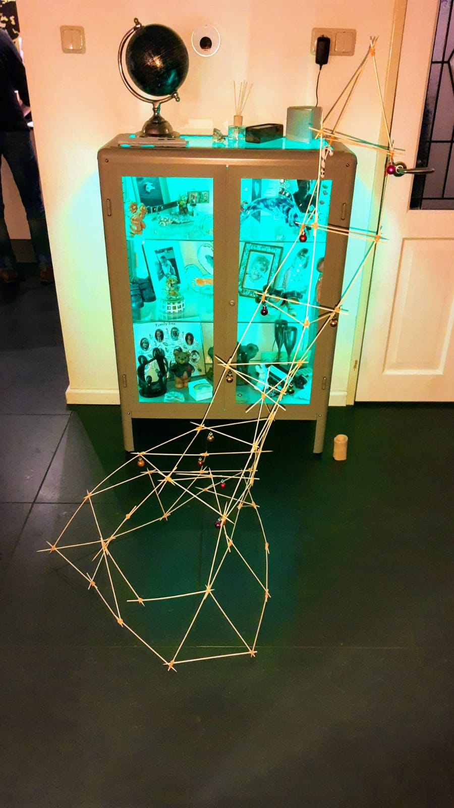
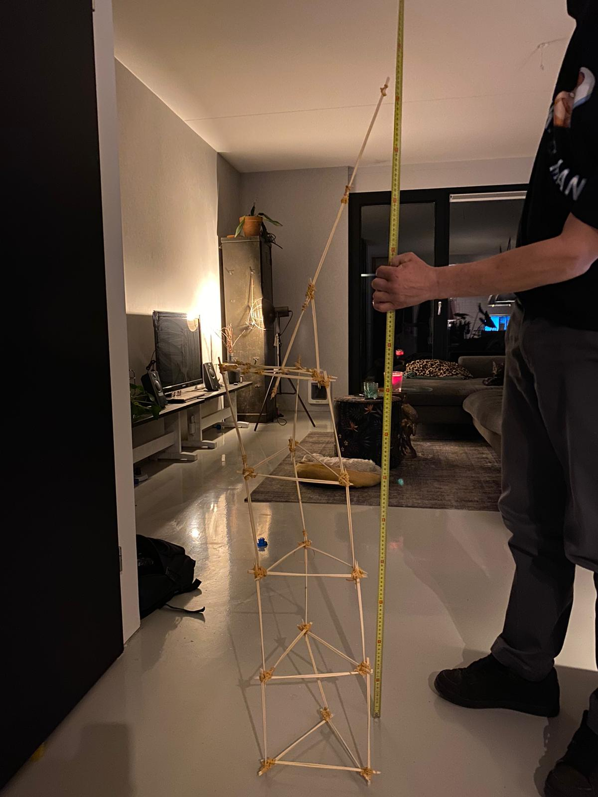
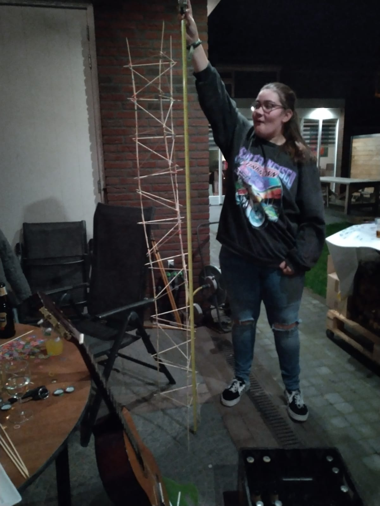
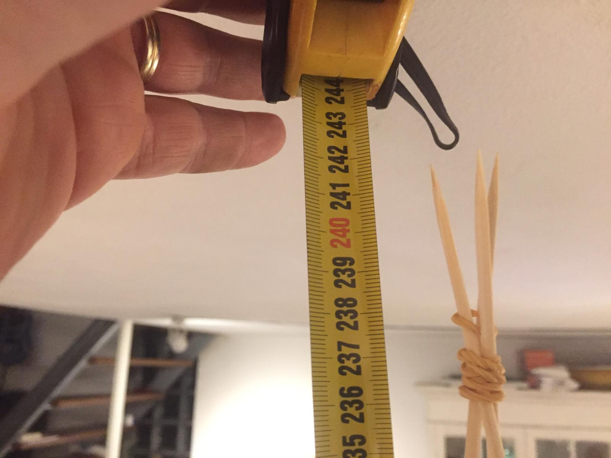
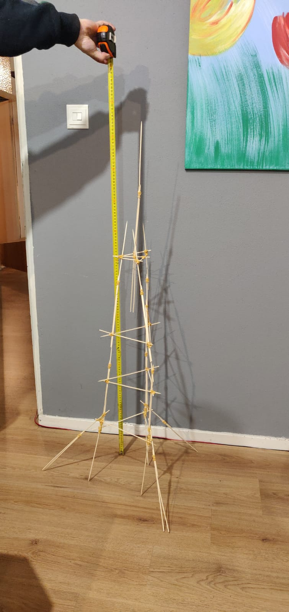
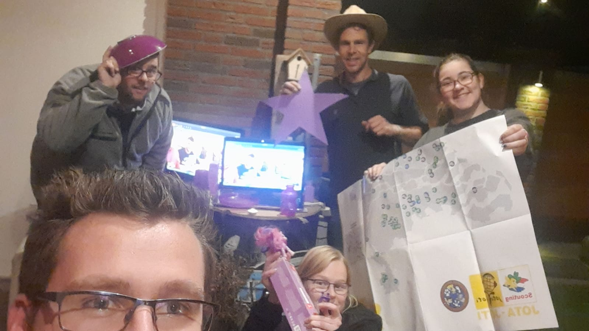
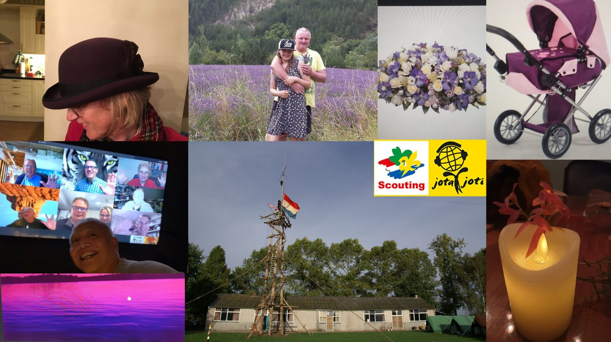

Speluitleg
Wat leuk dat julie meedoen met De grote online JOTA-quizzz!
Hieronder vind je alles wat je nodig hebt. Het spel is opgedeeld in basisopdrachten en
bonusopdrachten.
De basisopdrachten zijn hieronder te downloaden. Maak ze met je team en zorg dat je
1 document mét antwoorden naar het commandocentrum stuurt vóór het einde
van het grote online JOTA-spel!
13 bonusopdrachten volgen eronder. De eerste 8 bonusopdrachten zijn al
vermeld, daar kun je dus direct mee beginnen.
De
laatste 5 bonusopdrachten hebben ieder hun eigen start- en/of eindtijd.
Zorg
dat je op tijd online bent voor de aanwijzing / download.
Ook het uploaden /
inleveren van de opdracht naar het commandocentrum heeft een deadline per
bonusopdracht!
Niet op tijd inleveren betekent geen punten!
Bij elke opdracht staat vermeld hoeveel (bonus)punten je kunt verdienen.
JOKERS:
Als je een Joker hebt, dan kun je deze inzetten bij bonusopdrachten.
Daarmee
kun je de punten voor deze opdracht verdubbelen, met een max. van 4 jokers per team.
- Als je een Joker wil gebruiken voor een bonusopdracht stuur dan voor 19.45 uur een foto van de joker met vermelding van de bonusopdracht naar het commandocentrum.
- Gebruik je de Joker niet als verdubbelaar, stuur dan een foto van de (resterende) gevonden Jokers naar het commandocentrum. Elke Joker is dan 10 punten waard.
- Een Joker mag maar 1 keer gebruikt worden, de sanctie op dubbel gebruik staat voor 50 punten in mindering per dubbel gebruikte Joker.
De puntentelling van alle bonusopdrachten zal direct verwerkt worden tijdens het spel,
waarna er om ongeveer 22.45 uur een voorlopige tussenstand bekend wordt gemaakt.
De basisopdrachten worden na de JOTA-quizzz nagekeken en zal zo spoedig mogelijk
verwerkt worden.
De prijsuitreiking zal op een nader te bepalen moment plaatsvinden.
Contact met commandocentrum
Whatsappgroep: Alle captains + het commandocentrum (alleen het commandocentrum kan
hier berichten in posten)
Whatsapp: 0646394256 (Benny), aanleveren van opdrachten
Contact: Via het contactformulier
Locatie: Kwarteldonk 18
Upload:
Google Drive
Als je de basisopdrachten weer wil uploaden, heb je een Google-account nodig.
Als je iets gemaild of ge-upload hebt, stuur dan ook een whatsapp berichtje!
Livestream Controlekamer
Deze link opent de livestream
in een ander tabblad.
Stream werkt wellicht niet goed in Firefox, advies: gebruik de Chrome browser.
Teamindeling
| Teamnaam | Teamleden |
|---|---|
| Scoviting-19 | Gertjan, Daniëlle, Willem, Bart, Jeroen, Irma, Martijn, Theo, Mirjam |
| ScoHoInBaDa | Marieke, Rob, Colin, Joost |
| Nader te bepalen | Tom, Juliën vd V., Harold, Daphne, Caitlyn, Lonneke, Lonneke, Fons, Joep |
| De Tègâhs | Walter, Rob, Olaf, Jeroen, Hans, Willem-Jan, René, Frank |
| S5 Nishaanionie | Floris, Philippe, Jari, Loraine, Joyce, Jeroen, Judith, Pim, Juliën M. de Ch. |
| Minionspower | Wietske, Maureen, Viona, Silke, Kyra |
Standenlijst
| Scoviting-19 | ScoHoInBaDa | Nader te bepalen | De Tègâhs | S5 Nishaanionie | Minionspower | |
|---|---|---|---|---|---|---|
|
Bonus 1 Proeven Deadline: 22.30 uur |
14 | 14 | 18 | 21 | 17 | ? |
|
Bonus 2 Hoe hoog?... Deadline: 22.30 uur |
20+10 hoogte:? |
20+20 hoogte:143 |
20+20 hoogte:190 |
20+10 hoogte:242 |
20 hoogte:124 |
? |
|
Bonus 3 "Sweded" Movie Deadline: 22.30 uur |
60 | ? | 60 | 60 | 60 | 60 |
|
Bonus 4 Kampvuur Deadline: 22.30 uur |
20+10 | ? | ? | 20+10 | 20+10+10+20+10+10 | ? |
|
Bonus 5 Journaal Deadline: 22.30 uur |
20 | ? | 20 | 20 | 20 | ? |
|
Bonus 6 Verzoekje op ScoutFM Deadline: 22.30 uur |
? | ? | ? | 20 | 20 | ? |
|
Bonus 7 Mop op ScoutFM Deadline: 22.30 uur |
? | ? | ? | ? | ? | ? |
|
Bonus 8 Foto-opdracht Deadline: 22.30 uur |
? | ? | 15+15 | 15 | ? | ? |
|
Bonus 9 Kampvuursnack Deadline: 21.30 uur |
20 spekjes |
? | 20+20 frikandellen |
? | 20+20+10+10 banaa+choco / appel + kaneel |
? |
|
Bonus 10 Extreme Introrally ScoutFM om 19.30 uur Deadline: 20.00 uur |
32 | 44+44 | 34 | 27 | 50+50 | 6 |
|
Bonus 11 Kahoot! 20.00 uur online |
X | X | X | X | X | X |
|
Bonus 12 Liedjes in een andere taal Whatsapp om 20.45 uur Deadline: 21.30 uur |
14 | 14+14 | 19 | 8 | 24+24 | ? |
|
Bonus 13 JOTA Bingo Livestream om 21.30 uur |
? | Bovenste rij:15 | Volle kaart: 20 | ? | Bovenste rij:15 | diagonaal:15 |
|
Jokers Deadline: 22.30 uur |
20 | 30 | ? | 40 | 60 | ? |
|
Tussenstand |
240 | 215 | 281 | 271 | 500 | 81 |
|
Basisopdrachten Deadline: 22.30 uur |
292 | 239 | 211 | 193 | 272 | 150 |
| Opruim minpunten | -20 | |||||
|
TOTAAL |
532 | 454 | 492 | 464 | 772 | 231 |
Basisopdrachten
Hier vind je de link
naar het document op Google Drive met basisoprachten.
Download dit document, voeg je teamnaam toe aan de bestandsnaam van het document.
Maak alle opdrachten digitaal in dit document en upload weer terug naar de Google Drive
map het VOOR het einde van het spel naar het commandocentrum. Om het document weer te
uploaden moet je ingelogd zijn op je eigen Google-account.
Bonus 1 - Proeven
In het pakket, dat je hebt ontvangen, vind je een aantal producten. Hieronder staan daar
een paar vragen over:
1. Welk merk frisdrank is dit?
2. Wat is het merk en de variant van deze chocoladereep?
3. Benoem het merk en de smaak van de borrelnootjes?
4. Biertje?? Maar voor soort is het? Er zijn 4 verschillende!
5. Wat voor merk chips is dit?
6. Benoem de soort van deze heerlijke appel!
7. Welk merk frikadellen is dit?
2 punten per goed antwoord.
De captain stuurt de antwoorden voor 22.30 uur via whatsapp of mail door naar het
commandocentrum i.c.m. de naam van de opdracht en je teamnaam.
Bonus 2 - Hoe hoog?... Altijd 3 meter hoger dan die van jullie ;-)
Bouw een JOTA-toren van sate-stokjes en elastiekjes van min. 1 meter hoog. Zorg ervoor dat
de toren minimaal 3 steunpalen heeft. Het bewijs kan geleverd worden door er een foto van
te sturen. Op de foto moet minimaal een rolmaat (oid), om de hoogte af te lezen, en een
teamlid te zien zijn.
Er zijn 20 punten voor deze opdracht te verdienen.
Wanneer je de hoogte toren hebt krijg je nog eens 10 punten extra.
De meest originele toren ontvangt ook 10 punten extra.
De captain stuurt de foto voor 22.30 uur via whatsapp of mail door naar het
commandocentrum i.c.m. de naam van de opdracht en je teamnaam.
| Teamnaam | Foto JOTA-torens |
|---|---|
| Scoviting-19 |  |
| ScoHoInBaDa |  |
| Nader te bepalen |  |
| De Tègâhs |
filmpje  |
| S5 Nishaanionie |  |
| Minionspower |
Bonus 3 - "Sweded" Movie
Maak een “Sweded” (reclame) filmpje na van een bekende commercial of een “Sweded” film
trailer (min. 30sec.). “Sweded” is een zero-budget film maken van alle materialen om je
heen. Je moet hem in 1 shot opnemen en mag niet bewerkt worden. Hierbij enkele “Sweded”
voorbeelden:
https://www.youtube.com/results?search_query=sweded
30 punten voor een “sweded” reclame filmpje.
60 punten voor een “sweded” film trailer.
De captain stuurt het filmpje voor 22.30 uur via whatsapp door naar het commandocentrum
i.c.m. de naam van de opdracht en je teamnaam.
| Teamnaam | "Sweded" Movie |
|---|---|
| Scoviting-19 | filmpje |
| ScoHoInBaDa | |
| Nader te bepalen | filmpje |
| De Tègâhs | filmpje |
| S5 Nishaanionie | filmpje |
| Minionspower | filmpje |
Bonus 4 - Kampvuur
Maak een kampvuurtje en zing een liedje bij je kampvuur.
Maak hier een filmpje van en stuur deze naar de commandocentrum.
20 punten voor een filmpje.
10 extra bonuspunten voor het grootste kampvuur.
10 extra bonuspunten als je muzikale begeleiding hebt dmv een akoestisch instrument.
De captain stuurt het filmpje voor 22.30 uur via whatsapp door naar het commandocentrum
i.c.m. de naam van de opdracht en je teamnaam.
| Teamnaam | Kampvuur |
|---|---|
| Scoviting-19 | filmpje |
| ScoHoInBaDa | |
| Nader te bepalen | |
| De Tègâhs | filmpje |
| S5 Nishaanionie | filmpje |
| Minionspower |
Bonus 5 - Journaal
Het meest bekeken televisieprogramma iedere dag is het journaal. Een heel belangrijk
programma om mensen te informeren over wat er verder in de wereld gebeurt. En daarbij is
er natuurlijk ook het Jeugdjournaal. Het valt alleen niet mee om iedere keer naast al het
nare nieuws ook een gezellig, leuk item te maken. Voor deze opdracht ga jij een eigen item
bedenken om te presenteren voor het Scouting Veghel journaal. En natuurlijk sluit je af
met een weerbericht! Zorg dat het eruit ziet alsof je in een echte TV-studio bent.
20 punten voor een filmpje.
De captain stuurt het filmpje voor 22.30 uur via whatsapp door naar het commandocentrum
i.c.m. de naam van de opdracht en je teamnaam.
| Teamnaam | Journaal |
|---|---|
| Scoviting-19 | filmpje (niet beschikbaar) |
| ScoHoInBaDa | |
| Nader te bepalen | filmpje |
| De Tègâhs | filmpje |
| S5 Nishaanionie | filmpje |
| Minionspower |
Bonus 6 - Verzoekje
Vraag de vogeltjesdans aan bij ScoutFM en laat ze je groepsnaam vermelden.
Link naar ScoutFM
20 Punten als het gelukt is.
Stuur als bewijs een filmpje van het fragment voor 22.30 uur met whatsapp naar het
commandocentrum.
| Teamnaam | Verzoekje |
|---|---|
| Scoviting-19 | |
| ScoHoInBaDa | |
| Nader te bepalen | |
| De Tègâhs | |
| S5 Nishaanionie | filmpje |
| Minionspower |
Bonus 7 - Mop
Vertel een mop, live bij ScoutFM en laat ze je groepsnaam vermelden.
Link naar ScoutFM
20 Punten als het gelukt is.
Stuur als bewijs een een filmpje van het fragment voor 22.30 uur met whatsapp naar het
commandocentrum.
| Teamnaam | Mop |
|---|---|
| Scoviting-19 | |
| ScoHoInBaDa | |
| Nader te bepalen | |
| De Tègâhs | |
| S5 Nishaanionie | |
| Minionspower |
Bonus 8 - Foto-opdracht
Maak een foto waar 10 paarse dingen opstaan, het hele team, een toren of zendmast, het
scoutinglogo, het JOTA/JOTI-logo, iemand met een gek hoedje, een plant of een bosje
bloemen en een brandende kaars.
15 Punten als alles op de foto staat.
De captain stuurt de foto voor 22.30 uur via whatsapp of mail door naar het
commandocentrum i.c.m. de naam van de opdracht en je teamnaam.
| Teamnaam | Foto-opdracht |
|---|---|
| Scoviting-19 | |
| ScoHoInBaDa | |
| Nader te bepalen |  |
| De Tègâhs |  |
| S5 Nishaanionie | |
| Minionspower |
Bonus 9 - Kampvuursnack
Bij het kampvuur smullen en smikkelen we vaak van een typische kampvuur/scouting snack.
Maak 5 stuks van zo’n snack klaar en breng deze voor 21.30 uur naar de
spelleiding.
20 punten als je de 5 snacks naar het commandocentrum brengt (Adres: Kwarteldonk 18 in
Veghel).
Wanneer je de lekkerste snacks hebt krijg je nog eens 10 punten extra.
Bonus 10 - Extreme Introrally
Om 19.30 uur wordt dit uitgezonden via ScoutFM.
30 intro's, sommige lang, sommige kort, allerlei genre’s, aan 1 stuk door achter elkaar
aan.
Herken het nummer en de uitvoerende artiest.
Link naar ScoutFM
1 punt per juiste artiest en 1 punt per juiste titel.
LET OP: De intro's kunnen heel snel gaan, neem het op als je de kans hebt!
De captain stuurt de antwoorden voor 20.00 uur via whatsapp of mail door naar het
commandocentrum i.c.m. de naam van de opdracht en je teamnaam.
Bonus 11 - Kahoot!
Van elk team moet 1 speler met de teamnaam meespelen.
Elke speler gaat om 21.00 uur naar
https://kahoot.it/ en login met Game Pin:
“komt via de app” en vul je teamnaam in. (game Pin verschijnt vlak voor de Kahoot
Quizzz.
Stem via de webcam af op het commandocentrum om de vragen te zien.
Puntentelling gaat als volgt:
1e team: 30 punten
2e team: 25 punten
3e team: 20 punten
4e team: 15 punten
5e team: 10 punten
6e team: 5 punten
Let op: Snelheid van antwoorden telt mee in de puntentelling!
Bonus 12 - Liedjes in een andere taal
Via Whatsapp krijg je om 20.45 uur, 12 voorgelezen songteksten.
Herken de titel en de artiest van het liedje.
1 punt per juiste artiest en 1 punten per juiste titel.
De captain stuurt de antwoorden voor 21.30 uur via whatsapp of mail door naar het
commandocentrum i.c.m. de naam van de opdracht en je teamnaam.
Bonus 13 - JOTA Bingo
Stem via de webcam om 21.30 uur af op het commandocentrum.
In het pakket dat je hebt ontvangen, zit een bingokaart.
Speel mee met dit ouderwets gezellige spel!
Je hebt Bingo (en kunt punten verdienen) wanneer je:
- De bovenste rij vol hebt (15 punten).
- Een diagonaal hebt (15 punten).
- Een volle kaart hebt (20 punten).
Stuur “Bingo” en een foto van je bingokaart via whatsapp naar het commandocentrum.
Wanneer het bewijs goedgekeurd is gaan we verder totdat er iemand een volle kaart heeft.
Een valse bingo wordt bestraft met -25 punten!
JOKERS
Stuur de Jokers die niet als verdubbelaar zijn gebruikt naar het commandocentrum. Maak dan een foto van de (resterende) gevonden Jokers met je teamnaam en stuur deze voor 22.30 uur naar het commandocentrum. Elke Joker is dan 10 punten waard.
| Teamnaam | Jokers |
|---|---|
| Scoviting-19 | |
| ScoHoInBaDa | |
| Nader te bepalen | |
| De Tègâhs | |
| S5 Nishaanionie | |
| Minionspower |
De Jokerjacht

|

|

|

|
.jpeg)
|

|

|